Symfony
(For Drupal Developers)
Presented by Larry Garfield (@Crell)
@Crell

- Senior Architect, Palantir.net
- Drupal 8 Web Services Lead
- Drupal Representative, PHP-FIG
- Advisor, Drupal Association
implements Huggable
Symfony 2
- Tier-1 PHP framework
- Loosely coupled
- Helped inspire PHP 5.3-era revolution
- Incubator for Composer
You
- Know Drupal 7
- Kind of know Drupal 8
- Want to move down-stack
Do I need to learn Symfony to use Drupal 8?
No!
Symfony fullstack
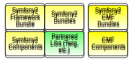Drupal 8
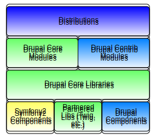Read the docs!
Here's what to watch out for...
Who is it for?
- Content strategists
- Site Administrators
- Content editors
- "Build stuff without writing code"
- Professional developers
- Bespoke applications
- "Make writing code easier"
In summary
A unified construction tool for content strategists and editors
A pre-configured collection of tools for developers
Configuration
- No UI
- Multiple config files (usually YAML)
- Compiled config/container
Bundles
- Enable extensions by hacking code
- "Bundles" have configuration... files
- "Admin" bundles, eg Sonata Admin Bundle
Sonata Admin Dashboard
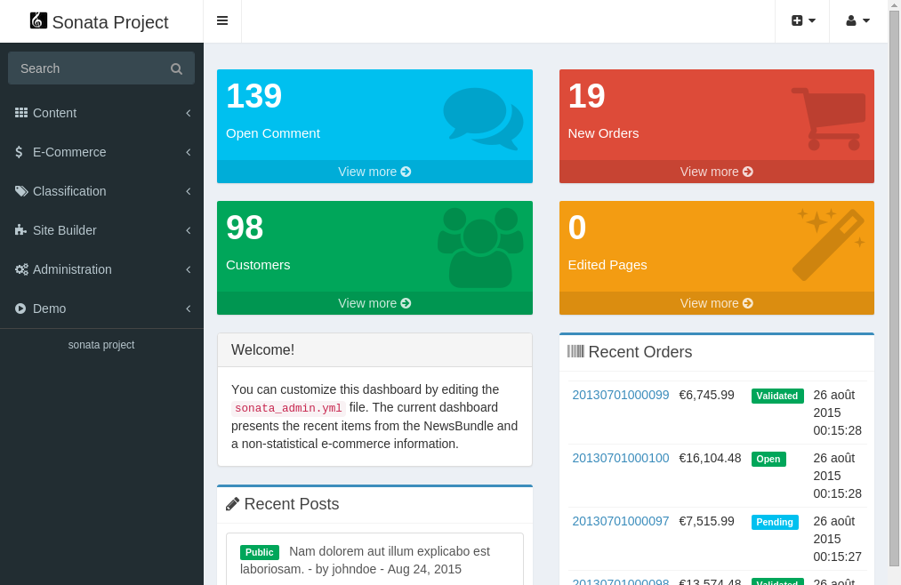Sonata Admin Posts
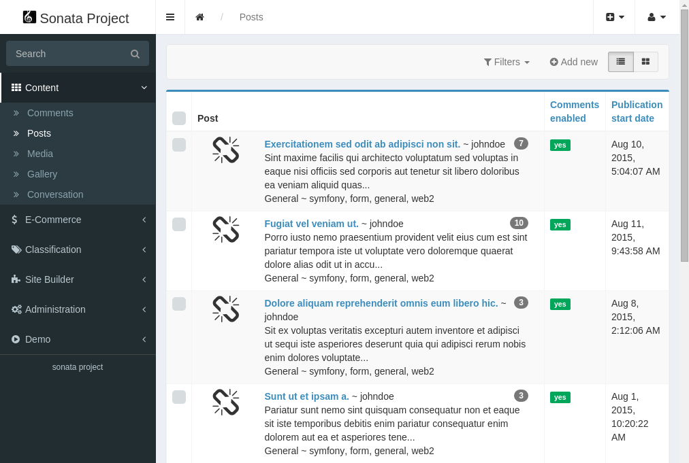Sonata Admin Posts
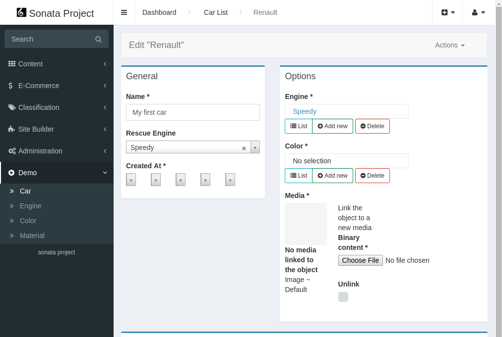Sonata Admin Users
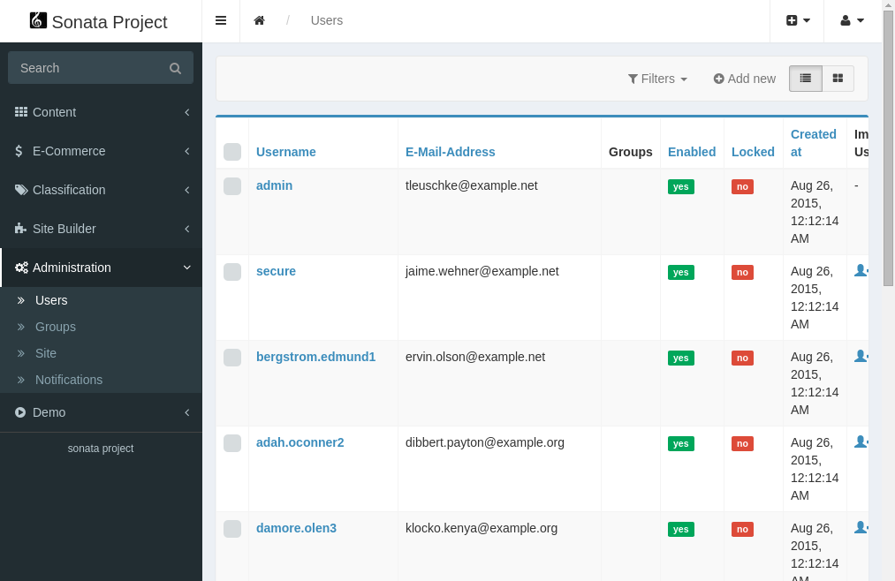Organic Groups?
Panels?
Not a thing
Developing
- Most dev tools are CLI
- Code scaffolding (Where did you think Drupal Console got it?)
- Dev/Prod toggle, by code
- Prod needs force rebuild
Architecture
functions?
Nope!
Services
- All meaningful logic in services
- Services are stateless objects
(Drupal 8 is like that, too)
Unopinionated configuration
PHP, XML, YAML, Annotations
Please pick one!
"The Drupal Way" is stricter than "The Symfony Way"
Drupal is metaprogramming via the UI
Symfony is metaprogramming via YAML
Theming
There is only one template per request
No, really!
Twig inheritance
index.html.twig
{% extends 'base.html.twig' %}
{% block body %}
Welcome to Symfony {{ constant('Symfony\\Component\\HttpKernel\\Kernel::VERSION') }}
Your application is ready to start working on it at:
{{ base_dir }}/
What's next?
Read Symfony documentation to learn
How to create your first page in Symfony
{% endblock %}
{% block stylesheets %}
{% endblock %}
base.html.twig
<!DOCTYPE html>
<html>
<head>
<meta charset="UTF-8" />
<title>{% block title %}Welcome!{% endblock %}
{% block stylesheets %}{% endblock %}
</head>
<body>
{% block body %}{% endblock %}
{% block javascripts %}{% endblock %}
</body>
</html>
Extending
You're supposed to hack core
app/AppKernel.php
class AppKernel extends Kernel
{
/**
* {@inheritDoc}
*/
public function __construct($environment, $debug)
{
// Set the default timezone to UTC.
date_default_timezone_set('UTC');
parent::__construct($environment, $debug);
}
public function registerBundles()
{
$bundles = array(
new Symfony\Bundle\FrameworkBundle\FrameworkBundle(),
new Symfony\Bundle\SecurityBundle\SecurityBundle(),
new Symfony\Bundle\TwigBundle\TwigBundle(),
);
if (in_array($this->getEnvironment(), array('dev', 'test'))) {
$bundles[] = new Symfony\Bundle\WebProfilerBundle\WebProfilerBundle();
$bundles[] = new Sensio\Bundle\DistributionBundle\SensioDistributionBundle();
}
return $bundles;
}
// ...
}
Symfony project structure
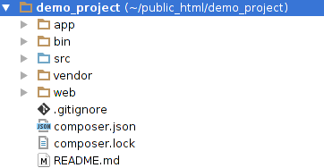Symfony project structure
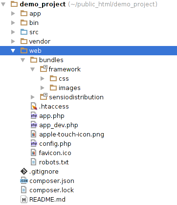Symfony project structure
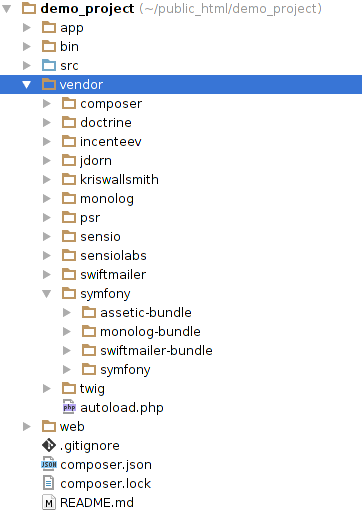Symfony project structure
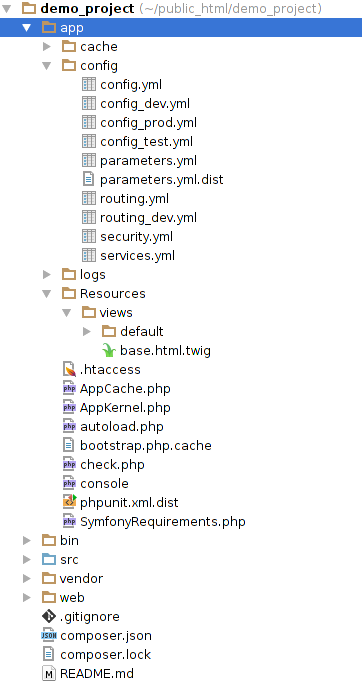Symfony project structure
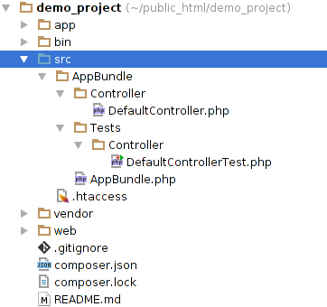Development workflow
- Push buttons
- Write code
- Press "clear cache"
git commit- Profit!
- Write code
- Run in dev mode
- Clear prod cache (several cmds)
- Build deploy snapshot
- Profit!
Same kernel, different patterns
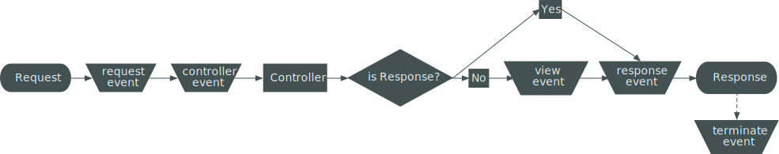Drupal always uses View event
Symfony discourages it
Example Symfony controller
namespace AppBundle\Controller;
use Sensio\Bundle\FrameworkExtraBundle\Configuration\Route;
use Symfony\Bundle\FrameworkBundle\Controller\Controller;
use Symfony\Component\HttpFoundation\Request;
class DefaultController extends Controller
{
/**
* @Route("/", name="homepage")
*/
public function indexAction(Request $request)
{
// replace this example code with whatever you need
return $this->render('default/index.html.twig', array(
'base_dir' => realpath($this->container->getParameter('kernel.root_dir').'/..'),
));
}
}
Drupal always wants a render array
Paths and routing
$module.routing.yml, or event- No path nesting
- Fixed paths with aliasing
- routing.[yml|xml|php], or annotation
- Path nesting
- Slugs
Storing data
- Entities
- State API
- Configuration API
- Key/Value
- Doctrine
Doctrine
- Stand-alone PHP project
- Simple objects only
- 1:1 field->property
- MongoDB requires ODM add-on
Drupal Entities vs Doctrine
- Configuration-driven
- Fields
- Multi-value
- Rich data types
- All custom classes
- Simple properties
- No multi-value
- Simple data types
Doctrine gotchas
- Primitive data only
- SQL and Mongo are different APIs
- Different event listeners from Symfony
- Very primitive file handling
But still many similarities!
(In Drupal 8)
Services
- All meaningful logic in services
- Services are stateless objects
- Event listeners are just glue code
Still the same kernel
Hooks ~ Listeners
But also tagged services
Twig
(modulo template inheritance)
Go forth and make music!
Larry Garfield
Making the Web a Better Place
Keep tabs on our work at @Palantir